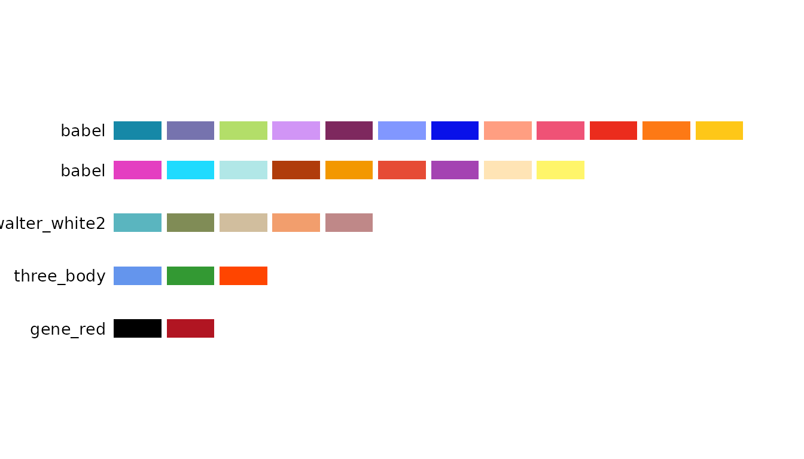
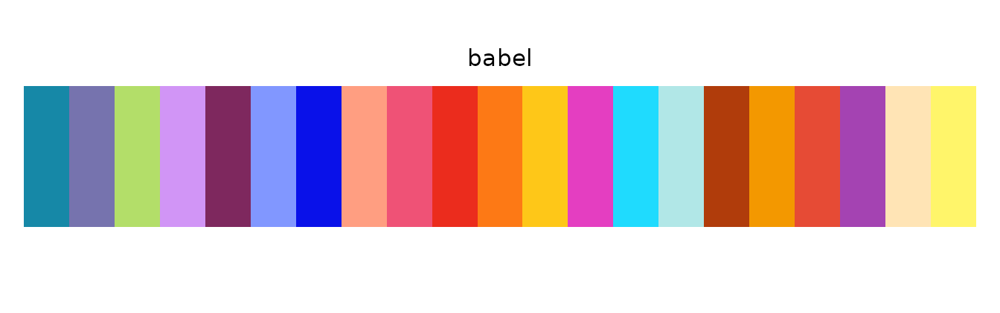
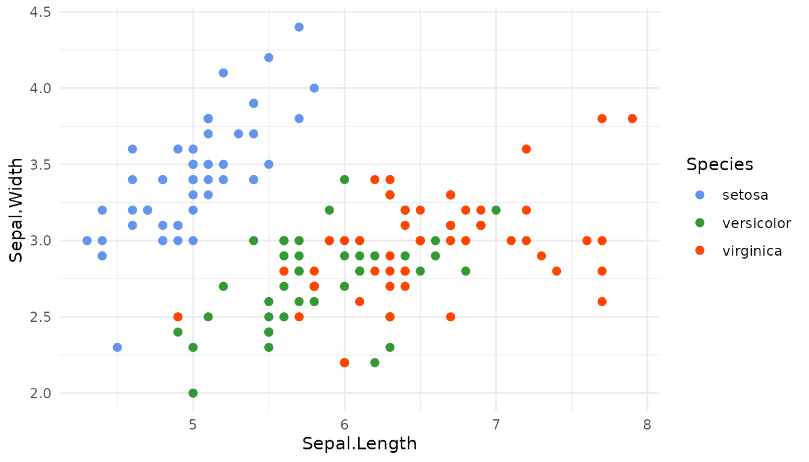
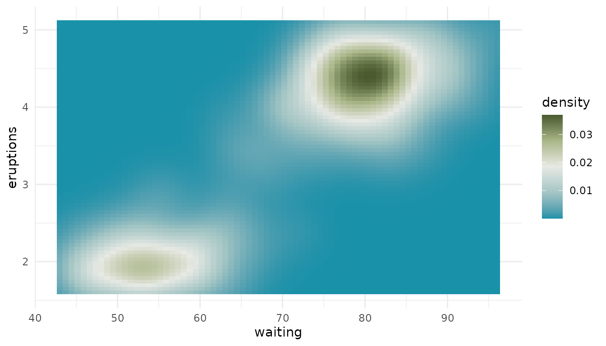

Overview
biopalette provides color palettes for biomedical visualization, each sourced from a real image. This guide covers the core workflow: browsing, retrieving, previewing, and using palettes in plots.
Installation
pak::pkg_install("evanbio/biopalette")Browse Available Palettes
library(biopalette)
list_palettes()
#> name type n_color colors
#> 1 walter_white diverging 5 #1991A9,....
#> 2 walter_white3 diverging 5 #B15F63,....
#> 3 gene_red qualitative 2 #000000,....
#> 4 three_body qualitative 3 #6495ED,....
#> 5 walter_white2 qualitative 5 #5AB5BF,....
#> 6 babel qualitative 21 #1688A7,....list_palettes() returns a data frame of all available
palettes with their name, type, and number of colors.
palette_gallery() renders a visual overview and returns
one ggplot per page, so you can display the page you want:
pages <- palette_gallery(verbose = FALSE)
names(pages)
#> [1] "diverging_page1" "qualitative_page1"
pages[["qualitative_page1"]]
Retrieve Colors
# Full palette
get_palette("three_body")
#> [1] "#6495ED" "#339933" "#FF4500"
# First n colors
get_palette("babel", n = 5)
#> [1] "#1688A7" "#7673AE" "#B3DE69" "#D195F6" "#7E285E"
# Specify type for disambiguation
get_palette("walter_white", type = "diverging")
#> [1] "#1991A9" "#A3C5C4" "#E7E9E4" "#A9B688" "#495A2E"The returned value is a character vector of HEX codes, ready to pass to any plotting function.
Preview a Palette
preview_palette("gene_red", plot_type = "rect")
preview_palette("babel", plot_type = "rect")
preview_palette("three_body", plot_type = "circle")
Use in ggplot2
library(ggplot2)
ggplot(iris, aes(Sepal.Length, Sepal.Width, color = Species)) +
geom_point(size = 2) +
scale_color_manual(values = get_palette("three_body")) +
theme_minimal()
For continuous scales, pass the colors to
scale_fill_gradientn() or
scale_color_gradientn(). Diverging palettes are the natural
fit here:
ggplot(faithfuld, aes(waiting, eruptions, fill = density)) +
geom_tile() +
scale_fill_gradientn(colors = get_palette("walter_white")) +
theme_minimal()
Function Reference
| Function | Purpose |
|---|---|
list_palettes() |
Data frame of all available palettes |
palette_gallery() |
Visual gallery of all palettes |
get_palette() |
Retrieve colors by name, type, and size |
preview_palette() |
Render color swatches |
create_palette() |
Add a new palette |
compile_palettes() |
Compile all JSONs into a named list |
remove_palette() |
Remove a palette by name |
hex2rgb() |
HEX to RGB |
rgb2hex() |
RGB to HEX |
Getting Help
- Documentation: https://evanbio.github.io/biopalette/
- Issues: GitHub Issues
-
Function help:
?get_palette,?preview_palette